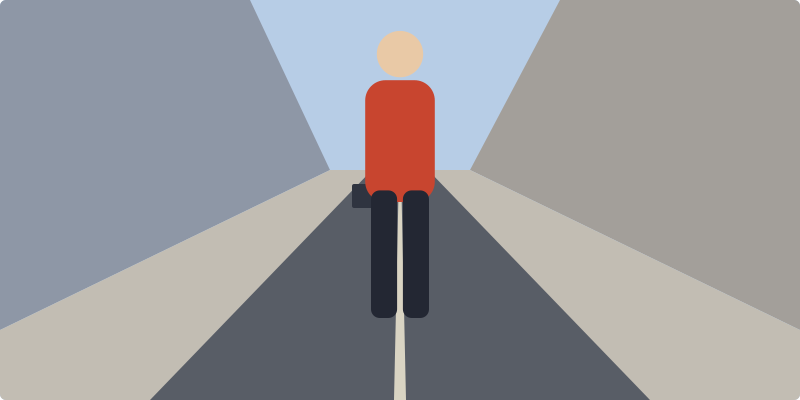
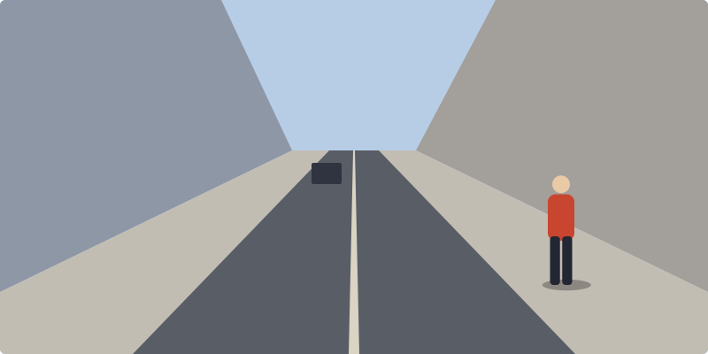
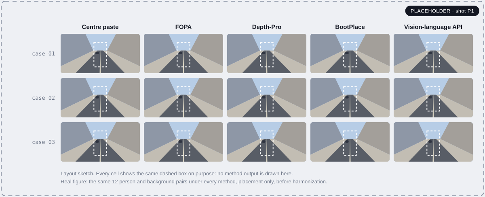
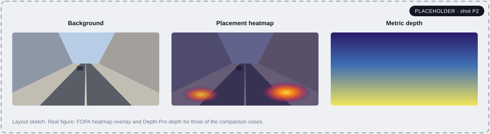

Object Placement: Where Should a Person Stand in a Scene?
Learned heatmaps, metric depth and scene geometry in one compositing pipeline
TL;DR: The pipeline cuts a person out of a studio photo, decides where they belong in a street scene and how large they should be, pastes them in, and matches their lighting. Three placement methods run in the pipeline and a fourth, BootPlace, is trained and evaluated alongside it. A matched comparison between them is in progress.


A drawing of the problem, not a result. Drag to compare a naive paste with a placement that respects scale and ground contact.
Pipeline
Placement methods
| Method | What it uses | How scale is set |
|---|---|---|
| FOPA | A learned heatmap of good positions for this object in this background | The background is cropped around the heatmap peak |
| BootPlace, evaluated separately | A detection transformer trained on Cityscapes to predict where objects go | Predicted box |
| Depth Pro | Metric depth of the ground and the estimated focal length | A 1.8 m person projected at that depth |
| Vanishing point | Eye height of the person and the horizon of the scene | Background aligned so the horizon meets the eye line |
| Vision-language model, in progress | An API call that returns ranked boxes as JSON with a stated scale reference | Returned box |


Engineering
- Models stay loaded. FOPA, Depth Pro and PCT-Net each run as a daemon that loads once and serves requests over a pipe, instead of reloading weights for every image.
- Runs are deterministic. A seeded manifest fixes which person meets which background, so a run can be split across a Slurm job array and resumed without duplicates.
- Expensive steps are cached. Cutouts, depth maps and placement heatmaps are precomputed, so inference reads them from disk.
Where the evaluation stands
The pipeline runs end to end at scale. Which placement method is best is not settled yet. The next step is a comparison on identical person and scene pairs, scored first on placement alone and then by blinded human ratings of scale, ground contact and lighting.
One observation from inspected examples, not yet a controlled result: harmonizers that predict a colour transform and apply it to the original pixels kept faces and fabric intact, while those that regenerate pixels through a low-resolution latent changed them.
Built on FOPA, BOOTPLACE, Depth Pro, PCT-Net, Harmonizer, IC-Light, libcom and PromptDresser. Backgrounds from Cityscapes and people from VITON-HD were used for research runs and are not shown here.